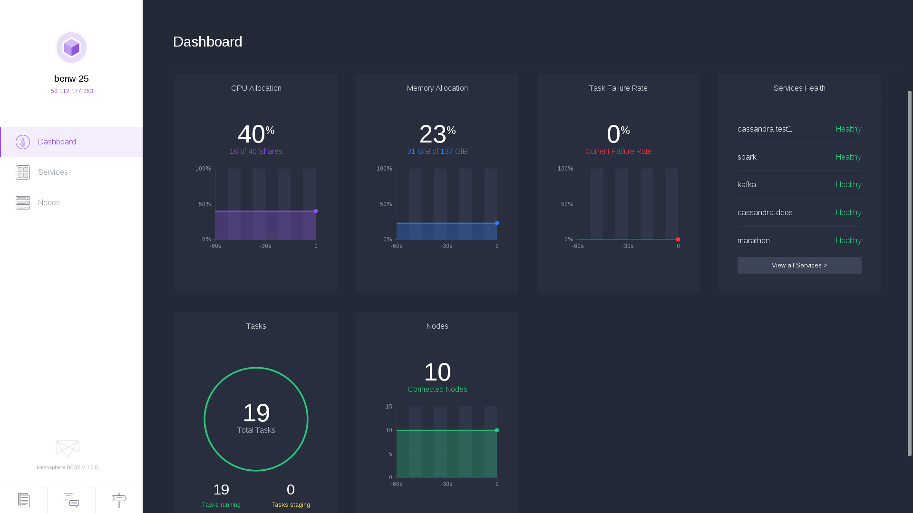
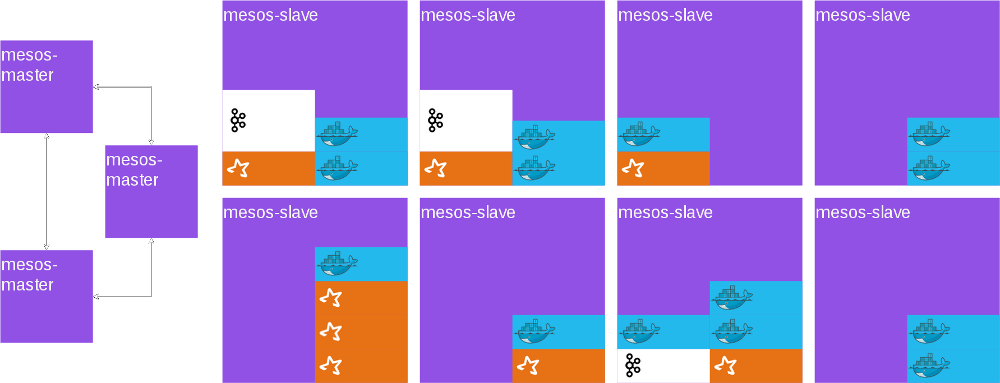
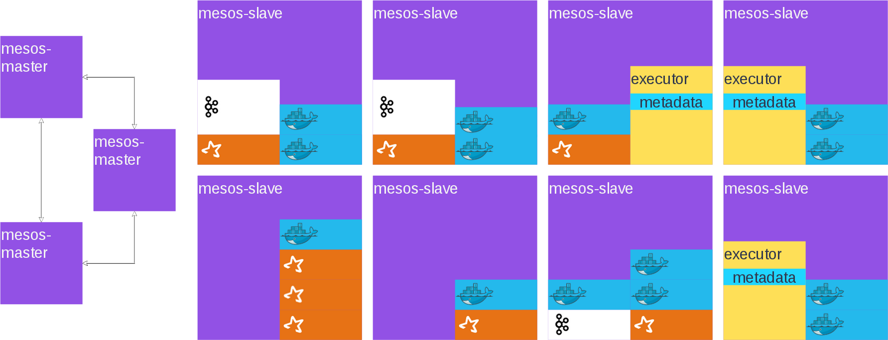
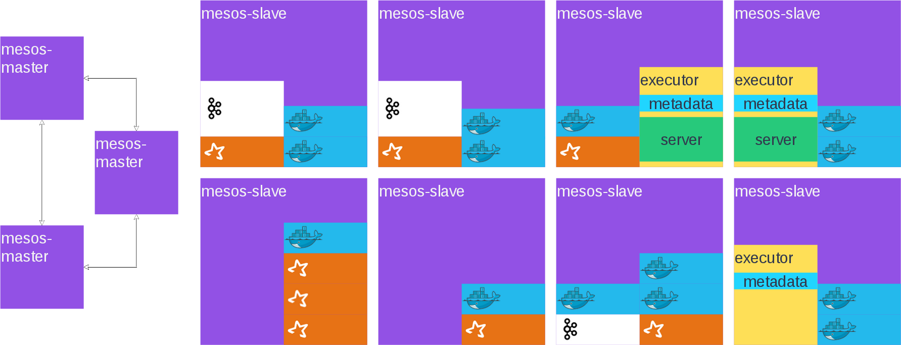
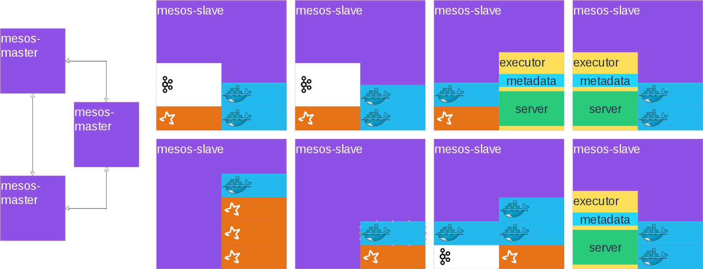
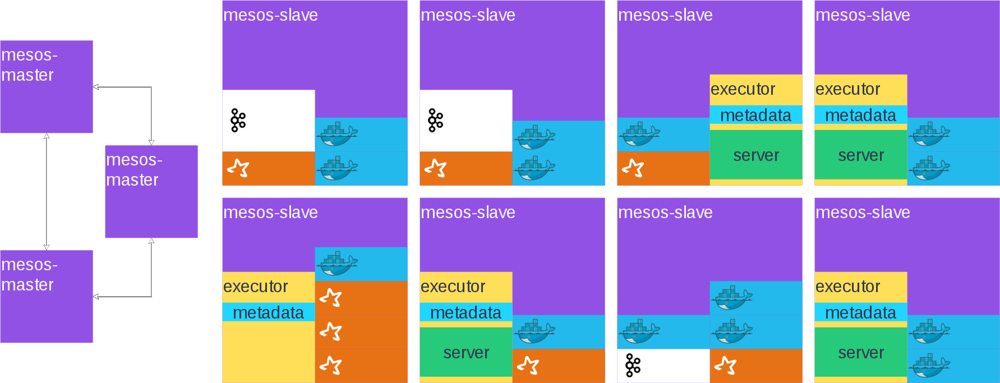
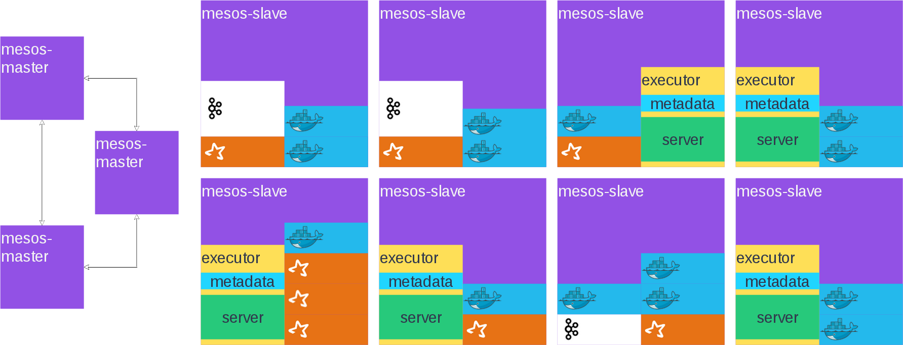

A New Way to Run Cassandra
Cassandra on DCOS
Ben Whitehead
ben.whitehead@mesosphere.io
@BenRWhitehead
MesosCon
August 19 - 21, 2015
Seattle, WA
Register Today: www.mesoscon.com
Agenda
- Intro
- DCOS Overview
- Cassandra on DCOS
- Demo
- Q & A
Intro
- Distributed Application Engineer @ Mesosphere
- Two+ years working with Mesos
- Five+ years working on Distributed Systems
- Cassandra Mesos Framework Engineer
Mesos
Provides primitives to author datacenter-native apps.
Primitives
- Resources (cpu, mem, disk, ports)
- Asset fetching
- Task state tracking
- API for the datacenter

Mesosphere DCOS
- Software to provide a complete OS: init, cron, apt-get, discovery, routing
- Beautiful web UI and CLI
- Support
- Ecosystem of DCOS Services
DCOS UI
DCOS CLI
$ dcos
Command line utility for the Mesosphere Datacenter Operating
System (DCOS). The Mesosphere DCOS is a distributed operating
system built around Apache Mesos. This utility provides tools
for easy management of a DCOS installation.
Available DCOS commands:
config Get and set DCOS CLI configuration properties
help Display command line usage information
marathon Deploy and manage applications on the DCOS
node Manage DCOS nodes
package Install and manage DCOS software packages
service Manage DCOS services
task Manage DCOS tasksCassandra DCOS Service
Features
- Managed node configuration
- Health Monitoring
- Rest API
- DNS Names for nodes
- Multiple Rings in one cluster
Scheduler
- Evaluates resource offers from Mesos
- Bootstraps the ring
- Keeps nodes running
- Coordinates tasks across cluster (repair, cleanup)
- Aggregates health check information
Node
Custom Executor
- Process configuration
- Health Monitoring
- Task Execution
- JMX Integration
Node
Tasks
- Metadata Task
- Server Task
- Cleanup Task*
- Repair Task*
- Config Update Task*
* Periodic Task
Bootstrap
Initial State
Bootstrap
Offer 1

Bootstrap
Offer 2

Bootstrap
Offer 3
Bootstrap
Offer 4

Bootstrap
Offer 5
Bootstrap
Offer 6
Bootstrap
Offer 7

Bootstrap
Offer 8
Bootstrap
Offer 9
Install
$ dcos package install cassandraCustomizable Install Options
{
"cassandra": {
"cluster-name": "dev",
"resources": {
"cpus": 3.0,
"mem": 6144,
"disk": 30720
}
}
}$ dcos package install cassandra --options=options.jsonInstalling

Healthy
Rest API
|
|
|
|
|
Demo!
Q & A
Thanks!
Let's chat!
We're hiring!
- Cassandra Framework: github.com/mesosphere/cassandra-mesos
- Docs: mesosphere.github.io/cassandra-mesos/
- Rest API: mesosphere.github.io/cassandra-mesos/docs/rest-api.html
- DCOS: mesosphere.com
- Join: mesosphere.com/careers/